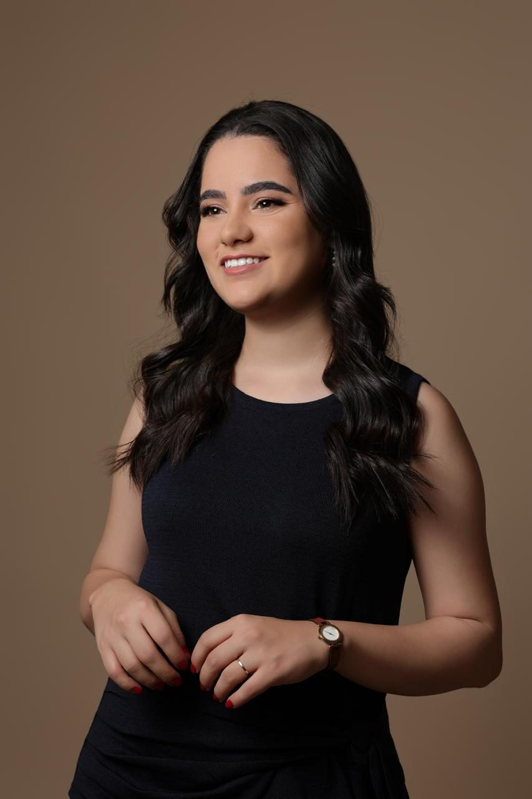

Sabrina Santos
Cirurgiã-Dentista
Atendimento focado em diagnóstico criterioso, conforto e acompanhamento próximo, com atuação em dor orofacial, DTM, odontologia do sono e endodontia.

Cuidado completo para a sua saúde bucal
- 01
DTM e dor orofacial
Diagnóstico e manejo de dores na face, mandíbula e articulação temporomandibular, como estalos, dor ao mastigar e bruxismo.
- 02
Odontologia do sono
Abordagem dos distúrbios respiratórios e do bruxismo do sono, em conjunto com outros profissionais de saúde quando necessário.
- 03
Endodontia mecanizada
Tratamento de canal com instrumentação rotatória e reciprocante, buscando mais precisão, conforto e previsibilidade.
- 04
Prevenção e saúde coletiva
Orientação sobre higiene, hábitos e acompanhamento regular para manter a saúde bucal ao longo do tempo.

Formação contínua, atendimento humanizado
Sou cirurgiã-dentista formada pelo Centro Universitário Newton Paiva e sigo me aprofundando em áreas que exigem olhar clínico atento, como a dor orofacial e a odontologia do sono.
Acredito que cada paciente tem uma história e que um bom tratamento começa por ouvi-la com atenção.
Ler mais“Um bom tratamento começa na escuta: entender a queixa, o contexto e o que realmente importa para cada pessoa.”
Vamos cuidar do seu sorriso?
Conte o que você está sentindo ou o que deseja tratar. Respondo com atenção e sem pressa.